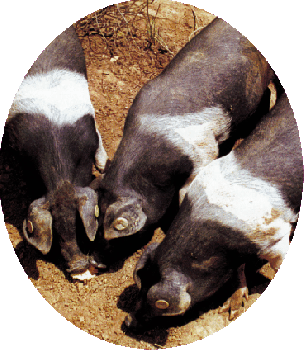

I
l concetto di semibradismo
La pratica agricola pastorale di semibradismo è, nel nostro caso, la reintroduzione in opportuni ambiti
agricoli-pastorali di suini che hanno la possibilità di alimentarsi e ricoverarsi in parte allo
stato brado ed in parte con il lavoro umano.
Con questa pratica, in sostanza, si permette al suino di vivere secondo il suo naturale ed abituale istinto di
sopravvivenza e riproduzione, con un
controllo saltuario dell' uomo.
